DARUDA 레퍼런스 보드
"일반적인 인테리어 스튜디오 사이트의 뼈대를 갖추되, 한두 군데만 독특한" 사례를 모았습니다. v1의 어디가 이용자에게 낯선지 먼저 짚고, 그 문제를 각 레퍼런스가 어떻게 푸는지 적었습니다. 캡처는 2026-10-21 기준 실제 화면입니다.
v1이 낯선 이유 — 이용자 관점 5가지
v1은 의뢰자 기획안을 그대로 옮긴 결과라 아래 지점에서 "이게 뭐지?"가 생깁니다.
1. 메뉴가 화면 맨 아래에 흩어져 있다이용자는 로고 옆이나 오른쪽 상단에서 메뉴를 찾습니다. 하단 네 귀퉁이에 소문자로 흩어진 메뉴는 캡션처럼 읽혀 클릭 대상인지 모릅니다.
2. about·press·contact가 페이지가 아니라 '오버레이'마우스를 올리기만 해도 흰 사각형이 튀어나오고, 주소(URL)도 바뀌지 않아 공유·뒤로가기가 안 됩니다. 모바일에서는 '오버'가 없어 동작이 달라집니다.
3. 'U' 마커, P / A 아웃라인 글자로고의 U, archive의 거대한 P·A는 내부 사람에겐 의미가 있지만 처음 온 사람은 무엇을 뜻하는지 알 수 없고, ( 4 ) ( 53 ) 숫자는 설명이 없습니다.
4. 작업물에 닿기까지 3단계메인 → archive → PROCESSING/ARCHIVING → LIVING/COMMERCIAL 행 → 프로젝트. 포트폴리오 사이트의 핵심인 "사진 보기"까지 클릭이 너무 많습니다.
5. 사진이 설명 없이 움직인다메인 슬라이드에 프로젝트명이 없어 "이게 이 회사 작업인가, 분위기 사진인가"를 알 수 없습니다. stof·Norm은 사진마다 제목 한 줄을 붙입니다.
1순위 레퍼런스 — 일반적인 뼈대 + 독특한 한 수
DARUDA 톤(흰 벽·대리석·굵은 로고·Pretendard)과 가까우면서, 상단 메뉴·작품 그리드·상세 페이지라는 통상 구조를 지킨 사이트입니다.
2순위 — 부분 참고
전체 구조보다 특정 장치 하나를 가져올 사이트.
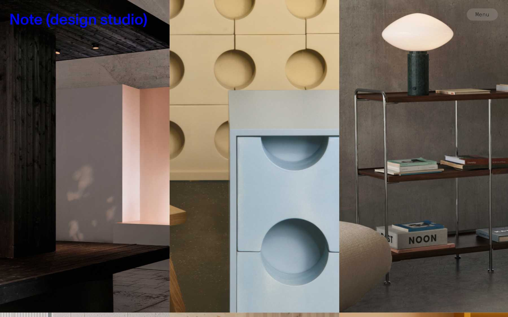
Note Design Studio · 스톡홀름세로 3분할 사진 패널 + 우상단 'Menu' 알약 버튼 + 파란 로고 텍스트. 메뉴를 숨겨도 버튼 하나는 눈에 띄게.notedesignstudio.se 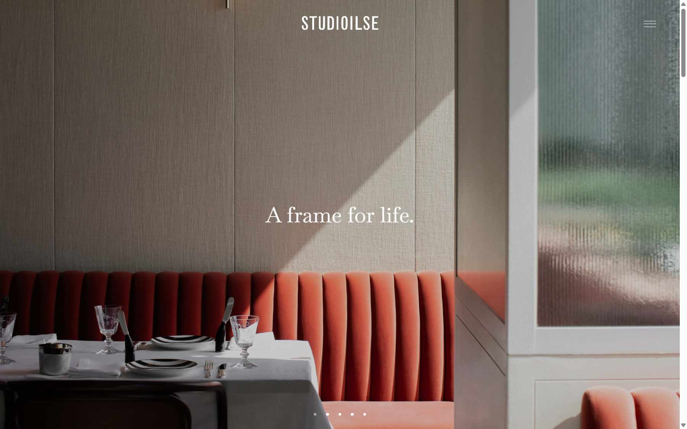
Studioilse · 런던풀이미지 + 가운데 로고타입 + 세리프 슬로건 "A frame for life." + 점 인디케이터. 슬로건 한 줄로 '무슨 회사인지'를 첫 화면에서 해결.studioilse.com 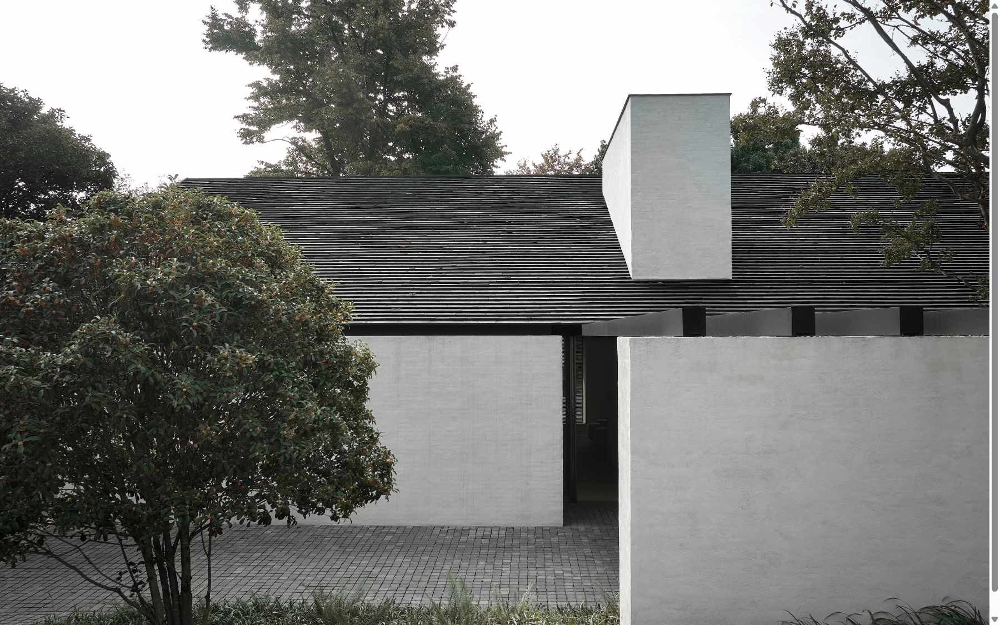
Vincent Van Duysen · 앤트워프풀이미지 스크롤형. 메뉴가 Interior ▸ Residential / Retail / Offices / Hospitality처럼 용도별로 갈라짐 — LIVING / COMMERCIAL 분류의 상위 사례.vincentvanduysen.com 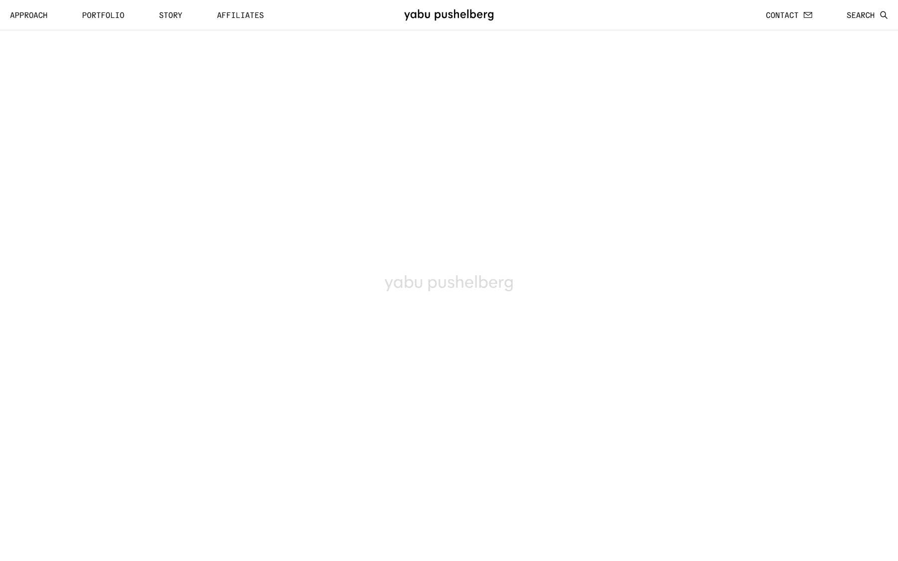
Yabu Pushelberg · 토론토/NY상단 바(APPROACH / PORTFOLIO / STORY / AFFILIATES — 로고 중앙 — CONTACT / SEARCH). 본문은 사진 콜라주에 호버해야 제목이 보이는 방식(캡처 시점엔 로딩 중).yabupushelberg.com 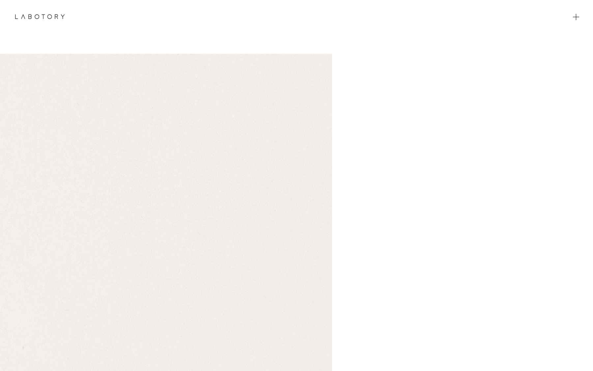
LABOTORY · 서울 한남로고 + '+' 하나뿐인 상단, 미색 종이 질감의 사각형이 화면 왼쪽을 차지. v1 archive의 '미색 배경'을 사이트 전체 분위기로 확장한 예.labotory.com 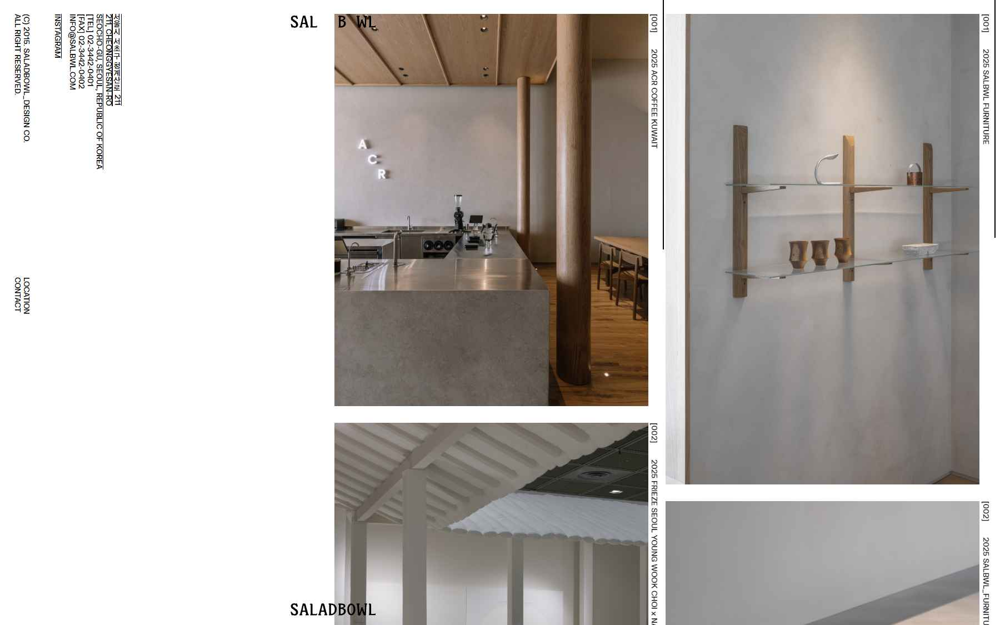
SALADBOWL · 서울 (의뢰자 지정)2열에 가로·세로 사진을 섞어 쌓고, 세로 캡션 [001] 2025 ACR COFFEE. 주소·전화·메일은 왼쪽에 세로 고정. 프로젝트 상세 서브 이미지 배치 참고.salad-bowl.co.kr 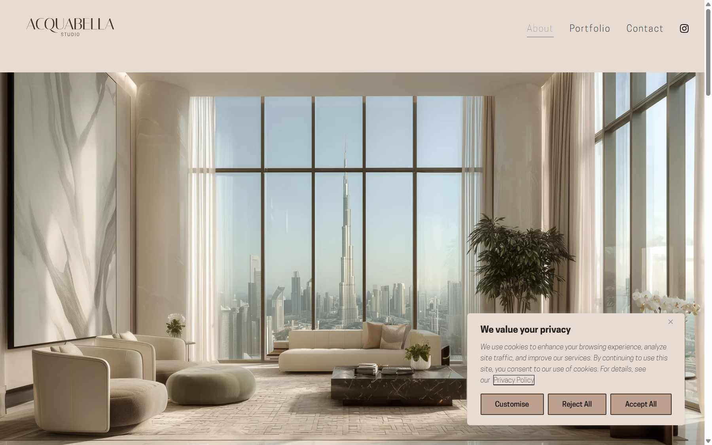
Acquabella Studio · 두바이베이지 상단 바 + About / Portfolio / Contact + 인스타 아이콘. 가장 읽기 쉬운 3메뉴. 사진 톤과 바 색을 맞춘 예.acquabella.studio 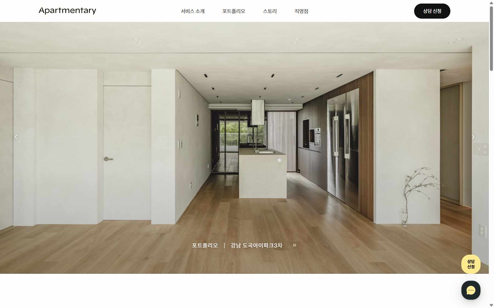
아파트멘터리 · 서울국내 소비자용 인테리어 사이트의 표준형: 로고 / 서비스 소개 · 포트폴리오 · 스토리 · 직영점 / '상담 신청' 버튼. DARUDA의 consult를 눈에 띄는 버튼으로 둘 때 참고. 단, 광고 톤은 과함.apartmentary.com
Mobbin에서 가져온 구조 참고
Mobbin은 앱·SaaS 중심이라 인테리어 스튜디오 사례는 거의 없습니다. 대신 '목록·상세·행 배치' 패턴이 뚜렷한 사이트 섹션을 골랐습니다. 각 링크는 Mobbin 원본입니다.
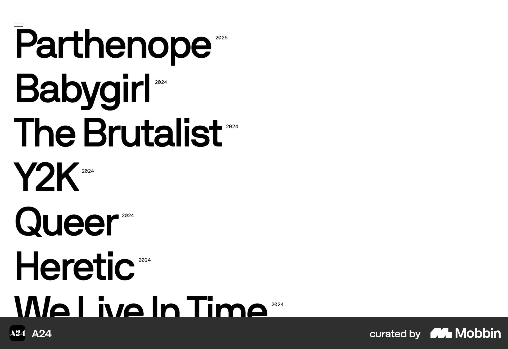
A24 — 큰 글자 목록 + 연도프로젝트명을 큰 타이포로 세로 나열, 옆에 작은 연도. ARCHIVING 전체 목록이나 PRESS 목록을 '사진 없는 인덱스'로 만들 때.mobbin.com · A24 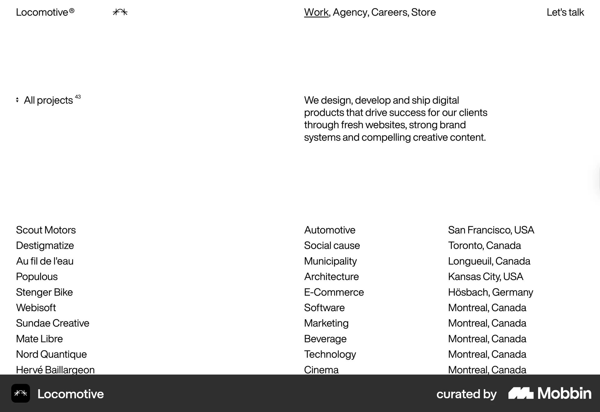
Locomotive — 3열 텍스트 표프로젝트명 / 분야 / 도시 세 열로 된 목록과 'All projects 43' 카운트. v1의 ( 53 ) 숫자를 이렇게 목록 머리에 붙이면 의미가 생깁니다.mobbin.com · Locomotive 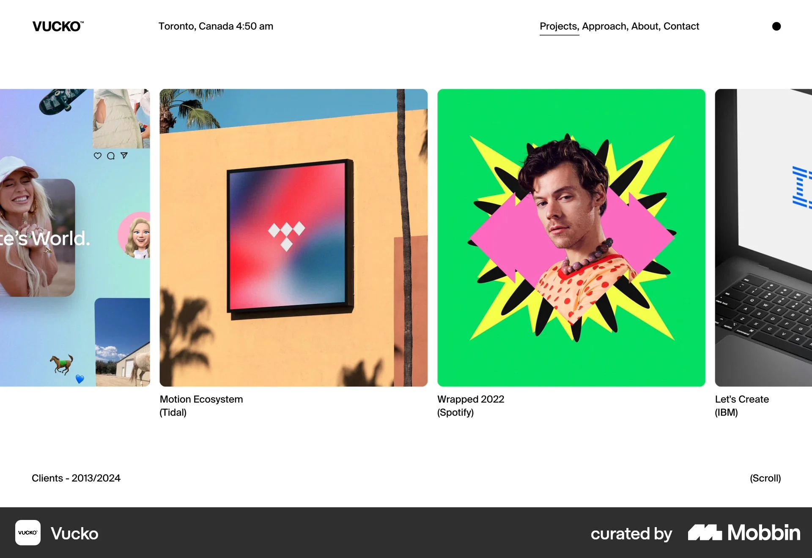
Vucko — 가로 카드 행 + 캡션상단 바(로고 / 도시·시각 / Projects, Approach, About, Contact), 아래 가로로 넘기는 카드 행과 "제목 (클라이언트)" 캡션. v1 ARCHIVING 행의 정돈된 버전.mobbin.com · Vucko 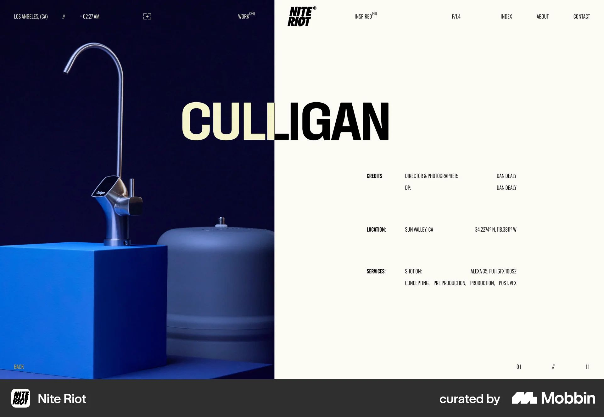
Nite Riot — 상세 좌우 분할왼쪽 큰 사진, 오른쪽 제목 + CREDITS / LOCATION / SERVICES 메타. 하단에 BACK과 01 // 11 페이지 번호. v1 project.html의 메타 영역 강화안.mobbin.com · Nite Riot 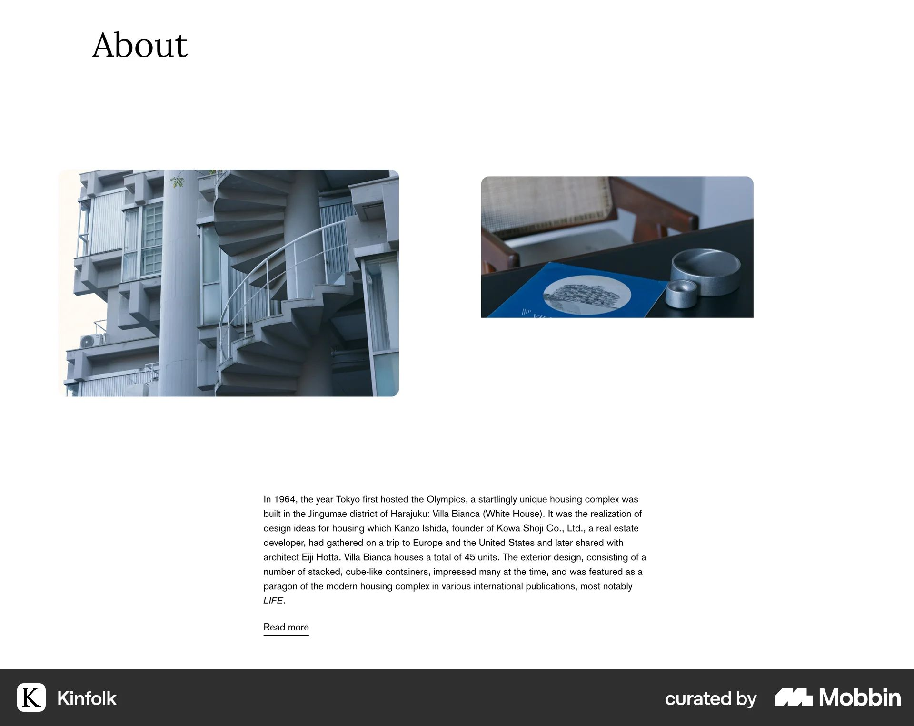
Kinfolk — About 섹션큰 세리프 제목, 사진 두 장 비대칭, 짧은 본문 + Read more. about를 오버레이가 아닌 페이지로 만들 때의 분량·호흡 참고.mobbin.com · Kinfolk
반면교사 — 독특하지만 이용자가 헤매는 사례
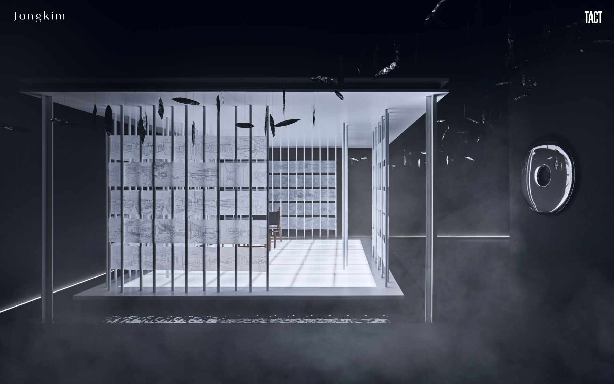
종킴디자인스튜디오검은 화면에 렌더 한 장, 메뉴 없음(로고와 TACT만). 작품을 보려면 어디를 눌러야 하는지 알 수 없음. v1의 '메뉴가 안 보이는' 문제와 같은 종류.
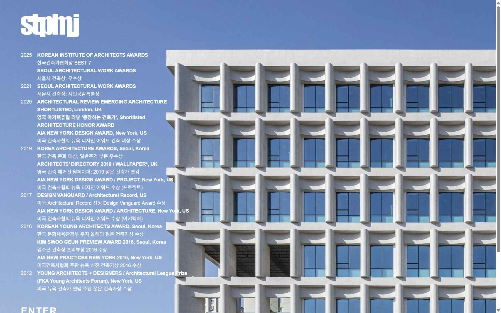
stpmj수상 목록이 사진을 덮고 하단에 'ENTER'. 인트로 페이지 하나를 더 거쳐야 함. 작품까지의 클릭 수가 늘어나는 v1 archive 구조와 같은 부담.
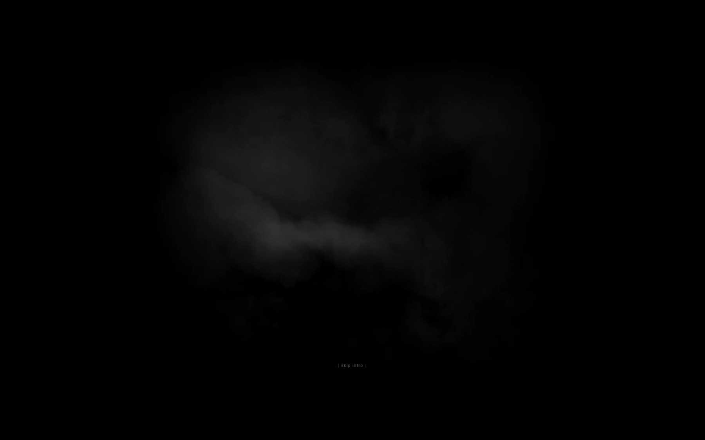
Studio KO검은 연기 인트로 + 'skip intro'. 분위기는 있지만 첫 3초를 버림. 메인 슬라이드가 3초마다 움직이는 v1도 '설명 없는 3초'가 되지 않게 캡션 필요.
v2 방향 제안 (의견 주시면 그대로 반영)
의뢰자 기획안의 '독특한 장치'는 살리되, 뼈대는 Norm·WGNB·Fenomen처럼 일반형으로 바꾸는 두 가지 안입니다.
추천 A
Norm형 — 풀이미지 + 상단 바 + 미색 그리드
- 상단 바: DARUDA 로고(좌) · about / archive / press / contact(우). 사진 톤에 따라 글자색 자동 전환(v1 기능 유지).
- 메인 풀이미지 슬라이드 유지. 단 사진 하단에 프로젝트명 + 한 줄 캡션과 점 인디케이터 추가.
- about·press·contact는 페이지로. 데스크톱에서는 흰 패널이 오른쪽에서 슬라이드되는 '패널 페이지'로 기획안 느낌 유지, 주소는 바뀜.
- archive = 미색 배경 그리드 한 페이지. 상단 필터 ALL / LIVING / COMMERCIAL / PROCESSING, 머리에 "( 53 ) completed · ( 4 ) in progress". P·A 아웃라인 글자는 필터 옆 장식으로 축소.
- 상세 = stof 메타 리스트 + salad-bowl 가로·세로 혼합 서브 이미지.
- 마퀴(THIS IS WHAT WE'RE MAKING)는 PROCESSING 필터 선택 시에만 하단에 등장.
대안 B
WGNB형 — 분할 히어로 + 드롭다운
- 상단 바 동일. archive 메뉴에 드롭다운(processing / living / commercial / press).
- 히어로 좌측에 프로젝트명이 겹쳐 지나가는 큰 타이포(v1의 'U' 마커·아웃라인 타이포를 이 자리로 옮김), 우측 사진 슬라이드.
- 스크롤 첫 화면 하단에 최근 작업 썸네일 행이 보이도록 높이 조정.
- 나머지(상세·press·contact)는 A안과 동일.
| v1 장치 | 이용자 문제 | v2 처리 |
|---|
| 하단 메뉴 4개 | 메뉴로 안 보임 | 상단 한 줄로 이동 (Halleroed·Norm) |
| hover 오버레이 | URL 없음, 모바일 상이 | 패널 페이지 또는 일반 페이지 (Kinfolk 분량) |
| 'U' 마커 | 의미 불명 | B안 히어로 타이포로 흡수, 또는 삭제 |
| P / A 2분할 | 클릭 1단계 추가 | 그리드 필터로 통합, 글자는 장식 (Locomotive 카운트) |
| 캡션 없는 슬라이드 | 무슨 사진인지 모름 | 프로젝트명 캡션 (Norm·stof) |
| 마퀴 2종 | 배경 소음 | PROCESSING 맥락에서만 |
| 톤에 따른 글자색 전환 | 문제 없음, 독특함 | 유지 |
| 미색 배경·굵은 로고·Pretendard | 문제 없음 | 유지, 사이트 전체로 확장 (LABOTORY) |